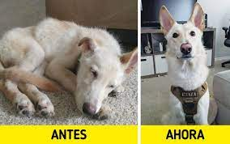
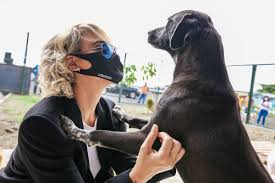
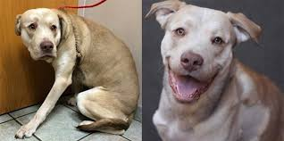
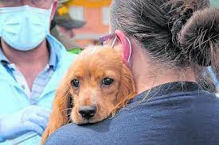
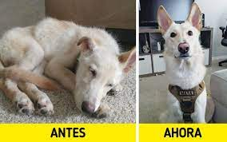
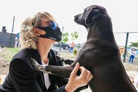
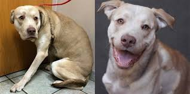
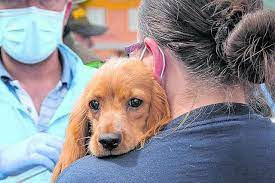

Programa Comunitario Salvando Patitas.
El programa comunitario de Milpa Alta Salvando Patitas está centrado en el rescatar y buscarles un hogar a los animalitos en situación de calle, por ello se pone a disposición de toda la comunidad esta pagina web para proporcionar a los animalitos callejeros los elementos necesarios para una vida digna ,salvaguardad su integridad y valorar su salud en ámbitos llenos de amor que contribuyan a su supervivencia para encontrar un digno hogar y la felicidad.

1¿Por que salvar a un animalito en situación de calle ?
México es el país con mayor población de perros en Latinoamérica, pero ni la mitad de ellos tiene hogar o refugio. Según datos de la Secretaría de Salud existen alrededor de 22 millones de canes, de los cuales más de 10 millones viven en las calles. “
Los perros no deberían estar en la vía pública por cuestiones de salud, ya que pueden transmitir enfermedades al humano, por ejemplo, a través de las heces fecales, y también por seguridad, pues algunos se tornan agresivos. Especialistas y protectores de animales coinciden en que la solución es alentar la esterilización y la tenencia responsable.
2¿Cómo cuidar los animales de la calle?
• Adoptar.
• Dar hogar temporalmente.
• Ser voluntario.
• Esterilizar a tus mascotas.
• Denuncia el maltrato animal.
• Haz una donación.
3¡Salva vidas! Así puedes denunciar maltrato animal en CDMX.
A nivel Nacional:
La PROFEPA es la encargada de dar seguimiento a denuncias sobre maltrato animal a fauna silvestre. Puedes denunciar por medio de www.profepa.gob.mx o al teléfono 800 PROFEPA.
Se ha logrado...
 








Expertos en:

La seguridad de los animales.
Salvar animalitos en situacion de calle